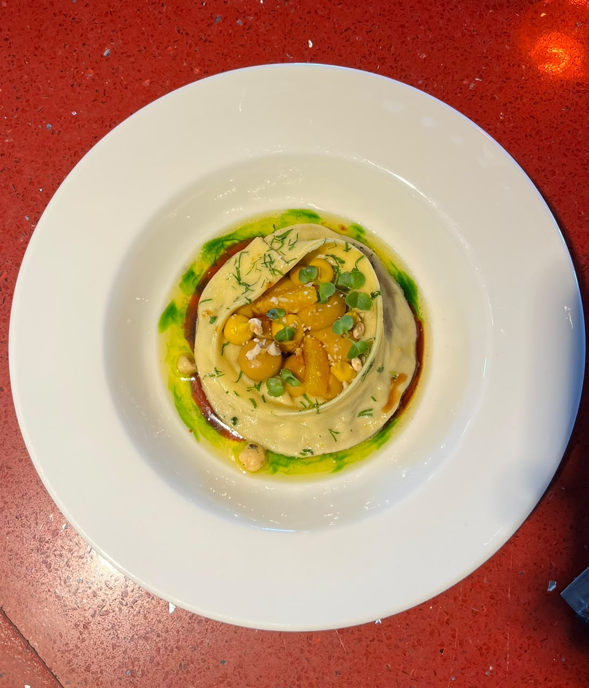

Cómo presentarlo en mesa
Ingredientes clave
Centolla del Estrecho de Magallanes — considerada la mejor del mundo por su carne firme y sabor delicado. Se presenta fría, con yogur que aporta acidez cremosa y limón para equilibrar.
Para quién recomendarla
Para quienes buscan lo más representativo de la Patagonia, amantes del marisco, o cuando el cliente no sabe qué elegir de entrada. Es nuestra carta de presentación.
Maridaje recomendado
Los blancos con acidez fresca y notas minerales complementan la dulzura de la centolla sin opacarla. Evitar tintos o vinos muy estructurados.
Cómo presentarlo en mesa
Técnica destacada
El sellado a alta temperatura crea una reacción de Maillard que genera la costra. El ajo negro es ajo fermentado durante semanas: su sabor es umami, dulce y complejo, sin la intensidad del ajo fresco.
Maridaje recomendado
La cremosidad de la mayonesa y la complejidad del ajo negro piden un blanco con cuerpo o un espumante fresco que limpie el paladar.
¿Qué es la leche de tigre?
Es la marinada cítrica —jugo de limón, ají, cebolla, cilantro— que "cocina" el pescado por acción del ácido. En Perú es considerada un plato en sí misma.
Maridaje recomendado
Grana Padano: queso italiano DOP, similar al Parmigiano-Reggiano pero más suave. Al gratinarse forma una costra dorada que complementa la cremosidad de la bechamel.
Maridaje recomendado
Locos: molusco gasterópodo similar al abalone. De textura firme y sabor marino intenso. Están en veda gran parte del año, lo que hace este plato especialmente valioso.
Maridaje recomendado
¿Por qué guanaco?
El guanaco salvaje come pastos nativos toda su vida, lo que le da una carne magra, muy limpia y de sabor delicado. No se cría en granjas — es caza responsable y sustentable.
Maridaje recomendado
Un Pinot Noir ligero complementa la delicadeza de la carne sin opacarla. El rosé es ideal si el cliente prefiere algo más fresco.
Para quién recomendarlas
Para comensales con experiencia gastronómica que aprecian los despojos o achuras de calidad. Si el cliente no conoce las mollejas, describe su textura cremosa y sabor suave antes de recomendarlas.
Maridaje recomendado
Maridaje recomendado
¿Qué es el chañar?
El chañar es un fruto silvestre del desierto y zonas áridas del norte de Chile. El arrope es una reducción dulce y densa de su jugo. Tiene un sabor entre higo, algarroba y caramelo.
Maridaje recomendado
Los espumantes y aromáticos blancos contrastan muy bien con la cremosidad del queso y los sabores dulces del plato.
Técnica: escabeche
El escabeche es una técnica española y latinoamericana que conserva la carne en una mezcla de vinagre, aceite y especias. La acidez penetra la carne, ablandándola y aromatizándola. La liebre salvaje, al ser magra e intensa, es ideal para esta preparación.
Maridaje recomendado
La acidez del escabeche y la vinagreta de casis piden un tinto ligero o un rosé frutal que no compita con los sabores marinados.
Por qué recomendarlo
Para comensales veganos o vegetarianos que buscan una entrada elegante y contemporánea. El repollo asado es un ingrediente humilde elevado a alta cocina — ideal para quienes aprecian la cocina de producto y técnica.
Maridaje recomendado
Un Sauvignon Blanc fresco y herbáceo complementa la vinagreta de apio y la frescura de las frutas encurtidas.
¿Qué champiñones se usan?
La preparación combina distintas variedades y técnicas: champiñones de París, portobello y hongos de temporada, trabajados en crema, confit, salteados y chips deshidratados. La diversidad de texturas es la clave del plato.
Maridaje recomendado
Los champiñones tienen afinidad tanto con blancos de cuerpo como con Pinot Noir ligero. Evitar tintos muy tánnicos que aplasten los sabores terrosos del hongo.
¿Qué es el gazpacho?
El gazpacho es una sopa fría de origen español, elaborada con vegetales crudos triturados y aliñados. En esta versión patagónica, la frambuesa local sustituye parte del tomate clásico, aportando acidez frutal y color vibrante.
Maridaje recomendado
Un Sauvignon Blanc fresco realza la acidez del tomate y la frambuesa. El espumante rosé acompaña el color vibrante del plato.
Para quién recomendarla
Ideal para comensales que buscan algo reconfortante, liviano y auténtico. También para quienes tienen restricciones alimentarias — es vegana, sin gluten y fácil de adaptar. El garzón debe saber qué verduras componen el plato ese día.
Maridaje recomendado
Un blanco fresco y mineral que no compita con los sabores del huerto. También es perfecta sola, sin maridaje.
¿Qué son el cochayuyo y el luche?
El cochayuyo es un alga parda de las costas chilenas, de textura firme y sabor marino suave. El luche es un alga verde más delicada, con sabor más intenso. Ambas son ingredientes ancestrales mapuches que se consumen en Chile desde tiempos precoloniales.
Maridaje recomendado
El cordero patagónico pide un tinto con cuerpo medio. El Carménère chileno es el maridaje natural para este plato.
¿Qué es el mote?
El mote es trigo cocido, un cereal andino y mapuche que se consume desde tiempos precoloniales en Chile. El pebre de mote es una salsa fresca —tipo relish— con este cereal, hierbas y vegetales frescos.
Maridaje recomendado
Vinos con buena acidez y taninos suaves para no aplastar la delicadeza de la carne. Evitar Cabernet muy tánico o Syrah muy especiado.
¿Qué es el demi-glace?
Una reducción de fondo de carne oscuro — se cocina por horas hasta concentrar todos los sabores del hueso y la carne en una salsa brillante, intensa y aterciopelada. Es la base de las grandes salsas de la cocina clásica francesa.
Maridaje recomendado
Por qué recomendarlo
Es el plato de mayor precio de la carta y el más pedido. Si un comensal pregunta qué recomienda, el chupe de centolla es la respuesta de fondo por excelencia. Centolla fresca del Estrecho de Magallanes, en su mejor expresión.
Maridaje recomendado
Un Chardonnay de cuerpo y con algo de madera complementa perfectamente la riqueza del chupe sin opacar la centolla.
Las morillas
Las morillas (morels) son uno de los hongos más apreciados en la alta cocina mundial. Tienen una forma en panal característica, sabor terroso e intenso y aroma único. Son de temporada y difíciles de cultivar.
Maridaje recomendado
¿Por qué cerdo de Chillán?
La zona de Chillán, en el sur de Chile, es reconocida por su tradición chacinera y la crianza de cerdo de alta calidad. Su carne tiene más infiltración de grasa que el cerdo industrial, lo que le da sabor y jugosidad superiores.
Maridaje recomendado
El cerdo es versátil: un Pinot Noir ligero funciona bien con la mostaza y el repollo morado. También acepta un blanco con cuerpo si el comensal lo prefiere.
Punto de cocción recomendado
Al ser una carne magra y delicada, se recomienda servirla a punto —medium— para preservar su jugosidad. Bien cocida puede resultar seca. El sabor es más suave que la liebre europea: limpio, con reminiscencias a cordero joven.
Maridaje recomendado
La salsa de vino tinto y la delicadeza de la liebre piden un tinto con taninos sedosos. El Carménère chileno es el maridaje perfecto para carnes de caza suaves.
¿Qué es el cuadril?
El cuadril (rump) es el corte ubicado en la parte posterior del animal, entre el lomo y la pierna. Tiene buena infiltración de grasa, lo que lo hace ideal para la parrilla — desarrolla una costra exterior perfecta manteniendo el interior jugoso.
Maridaje recomendado
El Carménère chileno es el compañero natural del cordero patagónico. Sus notas especiadas complementan el demi-glace y la trufa sin opacar la carne.
Punto de cocción recomendado
El filete se recomienda entre a punto sangrante (medium-rare) y a punto (medium). Al ser una carne muy magra, bien cocida puede quedar seca. Siempre preguntamos el punto al tomar el pedido.
Maridaje recomendado
Un tinto de estructura para sostener el queso azul y el demi-glace trufado. El Carménère con cuerpo es ideal; para una ocasión especial, el VIK es insuperable.

Pappardelle relleno de pato confitado · The Singular Patagonia
¿Qué es el pato confit?
El confit de pato es una técnica francesa clásica: la carne se cura en sal y luego se cocina sumergida en su propia grasa a baja temperatura durante horas. El resultado es una carne extraordinariamente tierna, de sabor profundo e intenso.
Maridaje recomendado
El pato confit y la naranja son maridaje clásico con Pinot Noir. La acidez del tinto complementa la riqueza de la carne confitada y la salsa cítrica.
¿Qué es el beurre blanc?
Salsa de la cocina francesa clásica elaborada con mantequilla emulsionada, vino blanco y vinagre. Suave, sedosa y delicada. Aquí aromatizada con lemongrass (hierba limón asiática) que le da una nota cítrica floral.
Maridaje recomendado
¿Qué son las perlas de verduras?
Las perlas de verduras son pequeñas esferas elaboradas mediante la técnica de esferificación —introducida por la cocina de vanguardia española— que encapsulan el jugo concentrado de una verdura en una membrana que explota en el paladar.
Maridaje recomendado
Un Chardonnay con cuerpo complementa la crema de hierbas y la riqueza de los langostinos sin opacar la delicadeza del pescado.
¿Qué es el congrio?
El congrio es un pez largo de las costas chilenas, muy apreciado en la gastronomía local. El congrio dorado tiene carne firme, blanca y de sabor delicado. Es el protagonista del emblemático caldillo de congrio, plato nacional.
Maridaje recomendado
Un Chardonnay con cuerpo o un espumante brut son el maridaje clásico para el risotto de tinta. La acidez limpia el paladar entre cada bocado.
Para quién recomendarlo
Para amantes de los mariscos que prefieren los sabores limpios sin salsas pesadas. También para comensales que quieren probar varios productos del mar en un solo plato. El perejil y el limón respetan la frescura natural de los mariscos.
Maridaje recomendado
Un Sauvignon Blanc fresco y cítrico es el maridaje clásico para pasta con mariscos. La acidez del vino complementa el limón y realza la frescura de los productos del mar.
Para quién recomendarlo
Comensales veganos, vegetarianos, o quienes buscan una opción más liviana. No es un plato menor — tiene la misma elaboración y precio que los demás fondos. Menciónelo con orgullo.
Maridaje recomendado
Los blancos aromáticos y especiados son perfectos compañeros para un curry. La acidez del Riesling limpia el paladar entre cada bocado.
Para quién recomendarlo
Para comensales veganos que buscan un fondo con carácter y textura. También para quienes quieran algo diferente a las preparaciones de carne. La berenjena crocante satisface incluso a los comensales más carnívoros.
Maridaje recomendado
Un rosé frutal complementa los tomates confitados y las verduras encurtidas. El Chardonnay fresco también funciona bien con la acidez del plato.
Puntos de cocción — preguntar siempre
Jugoso (rare): 52–55°C, centro rojo. A punto sangrante (medium-rare): 57–60°C, centro rosado vivo — recomendado para el vetado. A punto (medium): 63–65°C, rosado uniforme. Tres cuartos (medium-well): 68–70°C, apenas rosado. Bien cocido (well-done): +72°C.
Maridaje recomendado
Puntos de cocción
Para las chuletas de cordero recomendamos a punto sangrante (medium-rare) o a punto (medium). Bien cocido puede resultar algo seco. El hueso se puede comer con la mano — indicarlo al comensal si corresponde.
Maridaje recomendado
Puntos de cocción
Al ser tan magro y delicado, el lomo se recomienda a punto sangrante (medium-rare). Una cocción excesiva puede secar el corte. Siempre preguntar el punto al tomar el pedido.
Maridaje recomendado
Punto de cocción — siempre bien cocida
La pechuga de pavo debe servirse siempre bien cocida (temperatura interna mínima 74°C). A diferencia de la carne roja, el pavo no se sirve rosado por razones de seguridad alimentaria. La parrilla asegura una cocción uniforme sin secar en exceso.
Maridaje recomendado
El pavo acepta tanto blancos con cuerpo como tintos ligeros. El Chardonnay complementa su sabor delicado; el Pinot Noir si el comensal prefiere tinto.
Punto de cocción del pescado
El pescado a la parrilla se sirve completamente cocido (centro opaco y firme). El tiempo de cocción depende del grosor del filete. Importante: al ser una carne delicada, la parrilla debe estar limpia para que no se pegue.
Maridaje recomendado
¿Qué es el congrio dorado?
El congrio dorado es el más apreciado de las tres variedades chilenas (dorado, negro, colorado). Tiene carne firme, blanca y de sabor más pronunciado que otros pescados. Es la base del caldillo de congrio, el plato de pescado más icónico de Chile.
Maridaje recomendado
Punto de cocción del salmón
El salmón se puede servir ligeramente rosado en el centro (equivalente a medium-rare) o completamente cocido. Muchos comensales de alta cocina prefieren el salmón con el centro aún jugoso. Preguntar siempre la preferencia.
Maridaje recomendado
El salmón es versátil: acepta un Chardonnay con cuerpo, un rosé frutal, o incluso un Pinot Noir ligero si el comensal prefiere tinto.
¿Qué es el yuzu?
Cítrico japonés de aroma complejo: entre limón, mandarina y pomelo. Muy perfumado, aporta una nota cítrica floral que eleva cualquier preparación dulce o salada.
Presentación en mesa
La esfera se presenta sólida en el plato. El garzón vierte la salsa caliente en frente del comensal para que vea el momento en que el chocolate se derrite. Es un postre de gran impacto que recomendamos describir con anticipación para generar expectativa.
¿Qué es la lúcuma?
La lúcuma es un fruto originario de los Andes peruanos y chilenos. Su pulpa seca y cremosa tiene un sabor único —entre el caramelo, la calabaza y la yema de huevo— y es uno de los sabores más emblemáticos de la repostería sudamericana.
Sin gluten
La base de quinoa reemplaza la base de galleta tradicional, haciendo este cheesecake apto para intolerantes al gluten. Siempre confirmar con cocina en caso de celiaquía estricta.
¿Qué es la chirimoya?
La chirimoya (custard apple) es una fruta tropical originaria de los Andes. De pulpa blanca, cremosa y suave, con un sabor que combina piña, papaya, plátano y vainilla. Sin gluten, naturalmente.
Para quién recomendarla
Para comensales que aman el chocolate intenso y los frutos secos. También para quienes prefieren postres más ricos y saciantes. Si terminaron un plato fuerte, recomendar algo más liviano como la pavlova o el cheesecake.
Importante: conocer los sabores del día
Antes del servicio, consultar con pastelería qué sabores de helados y sorbetes están disponibles. Los sabores pueden incluir: lúcuma, calafate, chocolate, vainilla, frambuesa, limón de Pica, entre otros. Los sorbetes son naturalmente veganos.
Para quién recomendarla
Ideal para comensales que buscan un postre liviano, vegano o sin gluten. También para quienes ya están satisfechos pero quieren terminar con algo fresco y aromático. Mencionar las frutas locales como el calafate —una baya silvestre endémica de la Patagonia— genera interés.
¿Qué es el charquicán?
El charquicán es un plato mapuche y colonial chileno elaborado con zapallo, papa, choclo y verduras. Originalmente llevaba charqui (carne seca). Esta versión es completamente vegana y sin gluten, respetando las raíces del plato.
¿Qué son los porotos granados?
Los porotos granados son porotos (frijoles) tiernos —no secos— que se cosechan en verano. Se cocinan con zapallo, choclo y albahaca en una preparación espesa y cremosa. Es uno de los platos más representativos de la cocina chilena de temporada.
¿Qué es el merquén?
El merquén es un condimento mapuche elaborado con ají cacho de cabra ahumado y secado al sol, molido con sal y coriandro. Tiene un sabor ahumado, levemente picante y muy aromático. Es uno de los condimentos más representativos de la cocina del sur de Chile.
Cacho de cabra: ají chileno de forma curva, sabor ahumado y picor moderado. Uno de los ajíes más tradicionales del país.
Cuente la leyenda: es una excelente forma de crear conexión con el comensal y que recuerden el cóctel. La leyenda es real y muy conocida en la región.
Puerto Bories: frambuesa, jengibre, limón, tónica y sirope. Frutal, picante y refrescante.
Dorotea: pepino, apio, jugo de pomelo, tónica, limón y sirope. Vegetal, cítrico y muy refrescante.
Sauvignon Blanc del norte de Chile, con notas cítricas y minerales. Recomendar con: ceviche, ostiones, locos, pulpo. Fresco y directo.
Chardonnay de carácter, con algo de paso por madera. Recomendar con: centolla, bacalao de profundidad, chupe, ostiones gratinados. Uno de los más versátiles de la carta.
Uno de los chardonnays más reconocidos de Chile. Recomendar con: chupe de centolla, bacalao de profundidad. Para ocasiones especiales o comensales que conocen vinos.
El Carménère es la uva símbolo de Chile. Tiene notas a pimiento verde, especias y ciruela. Recomendar con: cordero, guanaco, liebre. Muy versátil con carnes rojas de la carta.
Para mencionar: "El Carménère era considerado extinto en Europa hasta que se redescubrió en Chile en los años 90. Hoy es nuestra cepa más emblemática."
Uno de los vinos más icónicos y premiados de Chile. Ensamblaje de múltiples cepas. Recomendar con: paletilla de cordero para dos, filete de vacuno. Para la mesa más especial de la noche.
Recomendar como: aperitivo al inicio, con ostiones gratinados, o al finalizar con postres ligeros. Un vino con el que se puede brindar en cualquier momento de la cena.
El vino chileno más reconocido en el mundo. Elaborado en sociedad con la familia Rothschild de Burdeos. Para: la mesa más especial, aniversarios, celebraciones. Siempre mencionarlo con reverencia.
Los champagnes más icónicos del mundo. Importante: No están incluidos en el programa C. Experience. Perfectos para celebraciones excepcionales. Siempre ofrecer la copa de espumante de la carta primero, y si el comensal lo desea, mencionar estas opciones.
Blanco, tinto y espumante por copa a $12.600 c/u. Si el comensal no sabe qué vino elegir con una botella completa, la copa es la mejor introducción. Consulte a cocina o al sommelier el vino del día disponible por copa.
Salude con calidez y presente la carta brevemente. Siempre ofrezca agua (con o sin gas, Andes Mountain $6.000 o importada $6.900). Pregunte si tienen alguna restricción alimentaria o alergia antes de tomar el pedido. Nunca espere a que el cliente lo mencione.
Mencione siempre: (1) el nombre del plato — (2) el ingrediente principal y su origen — (3) una característica destacada. Ejemplo: "Les traigo el garrón de cordero de Puerto Natales, asado lentamente por varias horas hasta quedar completamente tierno, con salsa demi-glace y arvejas especiadas."
Nunca improvise información que no sabe. La frase correcta: "Le confirmo con cocina en un momento" / "Let me check with the kitchen for you." Eso demuestra profesionalismo, no ignorancia.
Ante cualquier mención de alergia o intolerancia, siempre comuníquelo al chef antes de confirmar el plato. Nunca asuma que un plato es seguro sin confirmación de cocina. Los íconos de la carta son orientativos, no garantías absolutas frente a trazas cruzadas.
No espere que el cliente pregunte. Al retirar los platos del fondo, pregunte: "¿Les gustaría ver nuestra selección de postres?" o bien: "¿Les ofrezco el menú de postres?". En inglés: "May I bring you our dessert menu?"
Mariscos y pescados → vino blanco. Carnes rojas y caza → tinto. Aperitivo o celebración → espumante. Cuando no esté seguro, ofrezca la copa del día ($12.600) y consulte al sommelier del turno para recomendaciones específicas.
"May I take your order?" — ¿Puedo tomar su pedido?
"Would you like still or sparkling water?" — ¿Agua con o sin gas?
"Do you have any dietary restrictions?" — ¿Tiene alguna restricción alimentaria?
"I'll check with the kitchen." — Lo confirmo con cocina.
"Is everything to your liking?" — ¿Todo está a su gusto?
"May I clear your plate?" — ¿Puedo retirar su plato?
"Would you like to see the dessert menu?" — ¿Le muestro la carta de postres?
"The bill, of course." — La cuenta, por supuesto.
Entrada estrella: Centolla magallánica, yogur y limón ($32.800)
Entrada accesible: Tártaro de guanaco ($18.800) — historia del ingrediente
Fondo estrella: Chupe de centolla magallánica ($45.000)
Para dos personas: Paletilla de cordero, salsa de morillas ($75.000)
Vegetariano completo: Curry de lentejas beluga ($32.000)
Término formal chileno que engloba todo lo que se bebe: aguas, jugos, bebidas gaseosas, vinos, cócteles, café, té. Se usa en cartas, facturas y en el habla formal de restaurantes. En inglés se dice beverages (formal) o drinks (coloquial). Ejemplo: "¿Desean ver nuestra carta de bebestibles?"
Formal Chilean term encompassing everything guests drink: water, juices, soft drinks, wines, cocktails, coffee, tea. Used on menus, receipts and in formal restaurant speech. The English equivalent is beverages (formal) or drinks (colloquial). Example: "Would you like to see our drinks menu?"
La persona que come en el restaurante. Es el término correcto en sala — más formal que "cliente" o "persona". En inglés: diner (quien come) o guest (quien visita, más cálido y usado en hotelería de lujo). Siempre di "el comensal", no "el cliente" o "la persona".
The person dining at the restaurant. This is the correct term in the dining room — more formal than "client" or "person". In English: diner (one who eats) or guest (one who visits, warmer and preferred in luxury hospitality). Always say "the guest", not "the client" or "the person".
Término francés que significa literalmente "puesto en su lugar". En restaurante se refiere a tener todo preparado antes del servicio: mesas montadas, cubiertos listos, ingredientes cortados. Cuando el chef o jefe de sala dice "hagan el mise en place", significa que preparen todo antes de abrir.
French term meaning literally "put in place". In a restaurant context it means having everything prepared before service begins: tables set, cutlery ready, ingredients cut. When the chef or floor manager says "do the mise en place", they mean prepare everything before opening.
El pedido escrito o digital que toma el garzón y envía a cocina. "Tomar la comanda" = tomar el pedido de la mesa. En sistemas modernos es una pantalla o tablet; en otros restaurantes es un papel. En inglés: order o ticket.
The written or digital order the server takes and sends to the kitchen. "Taking the comanda" = taking the table's order. In modern systems it is a screen or tablet; in other restaurants it is paper. In English: order or ticket.
Verter el vino desde la botella a una jarra de cristal llamada decantador, para que el vino entre en contacto con el oxígeno y se abra — desarrolle mejor sus aromas y sabores. Se hace especialmente con vinos tintos de mucho cuerpo o vinos añejos con sedimento. "¿Desean que decantemos el vino?"
Pouring wine from the bottle into a crystal jug called a decanter, so the wine comes into contact with oxygen and opens up — developing its aromas and flavours. Done especially with full-bodied red wines or aged wines with sediment. "Would you like us to decant the wine?"
El especialista en vinos del restaurante. Su rol es asesorar a los comensales en la selección de vinos, maridajes y servicio. En un restaurante de esta categoría, el sommelier es una figura clave. Si una pregunta de vinos está fuera de tu conocimiento, siempre puedes decir: "Le llamo a nuestro sommelier para asesorarle mejor."
The restaurant's wine specialist. Their role is to advise guests on wine selection, pairings and service. In a restaurant of this category, the sommelier is a key figure. If a wine question is beyond your knowledge, always say: "Let me call our sommelier to assist you better."
El jefe de sala. Supervisa el servicio, asigna mesas, resuelve problemas con comensales y coordina al equipo de garzones. En hoteles cinco estrellas es una figura de autoridad en el comedor. Trátalo siempre con respeto y consulta cualquier duda operativa con él primero.
The head of the dining room. They oversee service, assign tables, resolve guest issues and coordinate the server team. In five-star hotels they are a figure of authority in the restaurant. Always treat them with respect and bring any operational question to them first.
El término formal para mesero o mozo en Chile. Viene del francés garçon. En inglés de hotelería de lujo se prefiere server o waiter/waitress, aunque en establecimientos muy formales se usa simplemente el nombre de la persona.
The formal Chilean term for waiter or server. Comes from the French garçon. In luxury hospitality English, server or waiter/waitress is preferred, though in very formal establishments only the person's first name is used.
Tiene dos significados: (1) los utensilios de mesa — tenedor, cuchillo, cuchara (en inglés: cutlery o silverware); (2) el cargo por persona que algunos restaurantes cobran solo por sentarse, que incluye pan, agua y servicio (en inglés: cover charge). En sala, "montar los cubiertos" = poner los utensilios en la mesa.
Has two meanings: (1) table utensils — fork, knife, spoon (in English: cutlery or silverware); (2) a per-person charge some restaurants levy just for sitting, covering bread, water and service (in English: cover charge). In the dining room, "setting the cutlery" = placing the utensils on the table.
El conjunto de platos, fuentes y recipientes usados en el servicio de mesa. En hotelería de lujo se dice china (inglés) cuando se refiere a porcelana fina. "Retire la vajilla sucia" = retire los platos usados de la mesa.
The full set of plates, serving dishes and receptacles used in table service. In luxury hospitality, china (English) refers to fine porcelain. "Clear the dirty tableware" = remove used plates from the table.
Cocinar un ingrediente a temperatura muy alta y por poco tiempo para crear una costra exterior dorada, sin terminar de cocinarlo por dentro. La reacción que ocurre se llama reacción de Maillard. Ejemplo en carta: "Pulpo sellado", "Congrio sellado". En inglés: seared.
To cook an ingredient at very high heat for a short time to create a golden outer crust without finishing the inside. The reaction is called the Maillard reaction. Menu examples: "Seared octopus", "Seared conger eel". In English: seared.
Técnica francesa de cocinar lentamente sumergido en grasa (aceite, manteca o la propia grasa del animal) a temperatura baja. El resultado es una carne extremadamente tierna y sabrosa. Ejemplo en carta: "Pato confitado". El tomate confitado se hace igual, pero en aceite de oliva.
French technique of slow-cooking submerged in fat (oil, lard or the animal's own fat) at low temperature. The result is an exceptionally tender and flavourful meat. Menu example: "Confit duck". Confited tomato is made the same way, but in olive oil.
Reducción intensa de fondo oscuro de carne: se cocina por horas hasta concentrar todos los sabores del hueso y la carne en una salsa brillante, espesa y aterciopelada. Es la base de las grandes salsas de la cocina clásica francesa. Aparece en varios platos de la carta — siempre describe sabor intenso y profundo.
Intense dark meat stock reduction: cooked for hours until all the flavours of bone and meat concentrate into a glossy, thick, velvety sauce. It is the foundation of the great sauces of classic French cuisine. Appears in several menu dishes — always suggests intense, deep flavour.
Salsa francesa clásica de mantequilla emulsionada con vino blanco y vinagre. Sedosa, delicada y con acidez suave. Se usa típicamente con pescados y mariscos. En la carta aparece en el bacalao de profundidad con lemongrass.
Classic French sauce of butter emulsified with white wine and vinegar. Silky, delicate and gently acidic. Typically paired with fish and seafood. On the menu it appears with the deep-sea cod and lemongrass.
Dorar la superficie de un plato en el horno o con salamandra (parrilla de calor superior) hasta formar una costra dorada. Se logra con queso, pan rallado o bechamel. Ejemplo en carta: "Ostiones gratinados". En inglés: au gratin o gratinéed.
To brown the surface of a dish in the oven or under a salamander (overhead grill) until a golden crust forms. Achieved with cheese, breadcrumbs or béchamel. Menu example: "Scallops au gratin". In English: au gratin or gratinéed.
Técnica de conservación y sabor en vinagre, aceite y especias. El ingrediente se marina o cocina en esta mezcla ácida, adquiriendo un sabor agridulce característico. Ejemplo en carta: "Escabeche de liebre salvaje". Diferente al encurtido — el escabeche lleva cocción.
A technique of preservation and flavoring in vinegar, oil and spices. The ingredient is marinated or cooked in this acidic mixture, acquiring a characteristic sweet-and-sour flavour. Menu example: "Hare escabeche". Unlike a plain pickle — escabeche involves cooking.
Mezcla estable de dos líquidos que normalmente no se unen, como agua y aceite, lograda mediante agitación o un agente emulsionante. Ejemplo: la mayonesa es una emulsión de aceite y huevo. En la carta: "emulsión de ajo negro". Textura suave, cremosa y homogénea.
A stable mixture of two liquids that normally do not combine, such as water and oil, achieved through agitation or an emulsifying agent. Example: mayonnaise is an emulsion of oil and egg. On the menu: "black garlic emulsion". Smooth, creamy, homogeneous texture.
Arroz italiano cremoso (risotto) teñido y sazonado con tinta de calamar (nero di sepia en italiano). La tinta le da un color negro intenso y un sabor marino suave y umami. Visualmente impactante, sabor profundo pero delicado. Aparece en el congrio sellado.
Creamy Italian rice (risotto) coloured and seasoned with squid ink (nero di sepia in Italian). The ink gives it an intense black colour and a gentle, umami marine flavour. Visually striking, deep yet delicate in taste. Appears with the seared conger eel.
Postre clásico de merengue horneado con centro suave, crujiente por fuera y marshmallow por dentro, cubierto con crema y frutas. Creado en honor a la bailarina rusa Anna Pavlova. En la carta: Pavlova de chirimoya y naranja.
Classic dessert of baked meringue with a soft centre — crisp on the outside, marshmallow-like inside, topped with cream and fruit. Created in honour of Russian ballerina Anna Pavlova. On the menu: chirimoya and orange Pavlova.
Preparación de carne o pescado crudo, finamente picado a cuchillo (nunca molido) y condimentado. Es una técnica, no un plato específico. El tártaro de guanaco de la carta es carne cruda de guanaco cortada a cuchillo con condimentos y frutos rojos.
A preparation of raw meat or fish, finely knife-chopped (never ground) and seasoned. It is a technique, not a specific dish. The guanaco tartare on the menu is raw guanaco meat knife-cut with condiments and berries.
Preparación de carne o pescado cortado en láminas muy finas, casi transparentes, servidas crudas o muy levemente curadas. Nació en Venecia con carne de vacuno. En la carta: Carpaccio de locos — el molusco se lamina finamente.
A preparation of meat or fish sliced into very thin, almost transparent sheets, served raw or very lightly cured. Originated in Venice with beef. On the menu: Loco carpaccio — the mollusc is sliced paper-thin.
Algas marinas comestibles nativas de Chile. El cochayuyo (Durvillaea antarctica) es una alga gruesa y carnosa, de sabor marino intenso. El luche es más delgado y suave. Ambos se consumen desde tiempos mapuches. Aparecen en la cazuela de cordero. En inglés: Chilean seaweed.
Native edible seaweeds from Chile. Cochayuyo (Durvillaea antarctica) is thick and meaty, with an intense marine flavour. Luche is thinner and milder. Both have been consumed since Mapuche times. They appear in the lamb stew. In English: Chilean seaweed.
Condimento mapuche elaborado con ají cacho de cabra ahumado y seco, molido con semillas de cilantro tostado. Sabor ahumado, picante moderado y muy aromático. Es uno de los condimentos más emblemáticos de la cocina chilena. Aparece en papas bravas y en el cóctel Extranjero.
Mapuche condiment made from dried, smoked cacho de cabra chilli, ground with toasted coriander seeds. Smoky, moderately spicy and highly aromatic. One of the most emblematic condiments of Chilean cuisine. Appears in the bravas potatoes and in the Extranjero cocktail.
Baya silvestre azul-morada de la Patagonia (Berberis microphylla). Sabor entre arándano, mora y cassis. Crece en arbustos espinosos de la estepa austral. Según la leyenda mapuche, quien come calafate siempre regresa a la Patagonia. Aparece en cócteles, sours y en la carta de vinos.
Wild blue-purple berry from Patagonia (Berberis microphylla). Flavour between blueberry, blackberry and cassis. Grows on thorny bushes of the austral steppe. According to Mapuche legend, whoever eats calafate will always return to Patagonia. Appears in cocktails, sours and on the wine list.
Fruto silvestre del norte árido de Chile (Geoffroea decorticans). Pequeño, amarillo-naranja cuando maduro. El arrope de chañar es una reducción espesa de su jugo, de sabor dulce similar al higo y la algarroba con notas de caramelo. Usado en la entrada del Camembert tibio.
Wild fruit from arid northern Chile (Geoffroea decorticans). Small, yellow-orange when ripe. Arrope de chañar is a thick reduction of its juice, with a sweet flavour resembling fig and carob with caramel notes. Used in the warm Camembert starter.
Cítrico japonés de aroma complejo y muy perfumado: entre limón, mandarina y pomelo, con notas florales. Se usa principalmente su jugo y ralladura. Muy difícil de encontrar fresco fuera de Asia — se usa en forma de jugo o concentrado. Aparece en la semiesfera de frambuesa y ruibarbo.
Japanese citrus with a complex, highly aromatic fragrance: between lemon, mandarin and grapefruit, with floral notes. Mainly used for its juice and zest. Very difficult to find fresh outside Asia — used in juice or concentrate form. Appears in the raspberry and rhubarb hemisphere dessert.
Trigo pelado y cocido, consumido en Chile desde tiempos precoloniales. Textura firme y masticable, sabor neutro y terroso. En la carta aparece en el pebre de mote con hierbabuena que acompaña el filete de guanaco. También existe el "mote con huesillo", bebida típica chilena de verano.
Hulled, cooked wheat, consumed in Chile since pre-colonial times. Firm, chewy texture, neutral and earthy flavour. On the menu it appears in the mote and spearmint pebre accompanying the guanaco fillet. "Mote con huesillo" is also a classic Chilean summer drink.
Hongos silvestres de forma cónica en panal, considerados entre los más valiosos de la alta cocina mundial. Sabor terroso, intenso y umami. Son de temporada corta y muy difíciles de cultivar, lo que los hace escasos y costosos. Aparecen en la salsa que acompaña la paletilla de cordero para dos.
Wild cone-shaped honeycomb mushrooms, considered among the most prized in haute cuisine worldwide. Earthy, intense and umami flavour. They are short-season and very difficult to cultivate, making them scarce and costly. Appear in the sauce accompanying the lamb shoulder for two.
Hierba aromática de origen asiático con intenso aroma cítrico y floral, similar al limón pero más suave y perfumado. Se usa el tallo interior. Muy usada en cocinas thai, vietnamita y de fusión. En la carta aromatiza el beurre blanc del bacalao de profundidad.
Aromatic herb of Asian origin with an intense citric and floral aroma, similar to lemon but softer and more fragrant. The inner stalk is used. Widely used in Thai, Vietnamese and fusion cooking. On the menu it flavours the beurre blanc of the deep-sea cod.
Chocolate rubio creado por Valrhona, elaborado tostando chocolate blanco hasta caramelizarlo. Color dorado, sabor a galleta, caramelo y vainilla — más complejo que el chocolate blanco común. Considerado el "cuarto tipo" de chocolate (negro, leche, blanco y rubio). Aparece en la torta de lúcuma.
Blond chocolate created by Valrhona, made by toasting white chocolate until caramelised. Golden colour, biscuit, caramel and vanilla flavour — more complex than ordinary white chocolate. Considered the "fourth type" of chocolate (dark, milk, white and blond). Appears in the lúcuma cake.
Queso italiano duro con denominación de origen (DOP), similar al Parmigiano-Reggiano pero más suave y menos intenso. Se produce en el Valle del Po, norte de Italia. Excelente para gratinar por su capacidad de derretirse formando una costra dorada. Aparece en los ostiones gratinados.
Hard Italian cheese with denomination of origin (DOP), similar to Parmigiano-Reggiano but milder and less intense. Produced in the Po Valley, northern Italy. Excellent for gratinating due to its ability to melt into a golden crust. Appears in the gratinated scallops.
Salsa fresca típica chilena de tomate, cilantro, cebolla, ají y limón — similar a una salsa mexicana pero más herbácea. En la carta se usa como concepto: el "pebre de mote" es una versión contemporánea con trigo cocido en lugar de tomate. En inglés se describe como Chilean fresh relish o simplemente pebre.
Classic fresh Chilean sauce of tomato, cilantro, onion, chilli and lemon — similar to Mexican salsa but more herby. On the menu it is used as a concept: "mote pebre" is a contemporary version with cooked wheat instead of tomato. Described in English as Chilean fresh relish or simply pebre.
Vino elaborado con mezcla de dos o más cepas. Por ejemplo, Cabernet Sauvignon + Carménère + Merlot. El ensamblaje busca la complejidad que ninguna cepa lograría sola. En la carta de vinos hay toda una sección de ensamblajes, que suelen ser los vinos más complejos y de mayor precio. En inglés: blend o assemblage.
Wine made from a blend of two or more grape varieties. For example, Cabernet Sauvignon + Carménère + Merlot. A blend seeks the complexity that no single variety could achieve alone. The wine list has an entire section of blends, which tend to be the most complex and highest-priced wines. In English: blend or assemblage.
Términos que indican el nivel de dulzor en espumantes y champagnes. Extra Brut = muy seco (casi sin azúcar). Brut = seco (poco azúcar). Demi-sec = semidulce. La mayoría de los espumantes de la carta son Brut — apropiados para aperitivo y para acompañar mariscos.
Terms indicating the level of sweetness in sparkling wines and champagnes. Extra Brut = very dry (almost no sugar). Brut = dry (little sugar). Demi-sec = semi-sweet. Most sparkling wines on the list are Brut — appropriate as an aperitif and with seafood.
La variedad de uva con la que se elabora el vino. Ejemplos: Cabernet Sauvignon, Carménère, Chardonnay, Sauvignon Blanc. En Chile es muy común identificar los vinos por su cepa. En inglés: grape variety o varietal. Conocer las cepas principales te ayuda a recomendar con más seguridad.
The grape variety used to make the wine. Examples: Cabernet Sauvignon, Carménère, Chardonnay, Sauvignon Blanc. In Chile it is very common to identify wines by their grape variety. In English: grape variety or varietal. Knowing the main varieties helps you recommend with greater confidence.
Compuestos naturales del hollejo, semillas y roble que dan esa sensación de sequedad y aspereza en la boca al beber un tinto. A mayor tanino, más estructura y capacidad de envejecimiento. Los Cabernet Sauvignon tienen muchos taninos; los Pinot Noir tienen pocos. Los blancos casi no tienen.
Natural compounds from the grape skin, seeds and oak that produce that sensation of dryness and astringency in the mouth when drinking a red wine. The more tannins, the more structure and ageing potential. Cabernet Sauvignons have many tannins; Pinot Noirs have few. Whites have almost none.
La combinación armónica entre un plato y un vino para que ambos se potencien mutuamente. Un buen maridaje hace que el vino sepa mejor con la comida y viceversa. La regla más simple: blancos con pescados y mariscos, tintos con carnes rojas. En inglés: food pairing o wine pairing.
The harmonic combination of a dish and a wine so that both enhance each other. A good pairing makes the wine taste better with the food and vice versa. The simplest rule: whites with fish and seafood, reds with red meats. In English: food pairing or wine pairing.
Certificación que garantiza que un producto viene de una región específica y fue elaborado según normas tradicionales. Ejemplo: el Champagne solo puede llamarse así si viene de la región de Champagne, Francia. En vinos chilenos no existe la misma figura, pero sí se indica el valle de origen (Colchagua, Maipo, etc.).
Certification guaranteeing that a product comes from a specific region and was produced according to traditional standards. Example: Champagne can only be called that if it comes from the Champagne region, France. Chilean wines do not have the same designation, but their valley of origin is indicated (Colchagua, Maipo, etc.).
❌ "Hola, soy Juan, ¿ya saben qué van a pedir?"
❌ "Buenas, los voy a atender yo."
❌ "Por acá es su mesa."
❌ "Siéntense aquí."
❌ "¿Qué van a comer?"
❌ "¿Ya eligieron?"
❌ "¿Quieren agua?"
❌ "¿Con gas o sin gas?"
❌ "¿Todo bien?"
❌ "¿Les gustó?"
❌ "¿Cómo estuvo todo?"
❌ "¿Ya terminaron?"
❌ "¿Se los llevo?"
❌ "¿Van a pedir postre?"
❌ "¿Quieren ver los postres?"
❌ "¿La cuenta?"
❌ "¿Les traigo la boleta?"
❌ "¿Tienen algún problema con la comida?"
❌ "¿Son alérgicos a algo?"
❌ "¿Quieren más vino?"
❌ "¿Otra copa?"
❌ "Hasta luego."
❌ "Chao, que les vaya bien."
Del francés "divierte la boca". Pequeño bocado elaborado por el chef que se sirve antes de las entradas, sin cargo, como cortesía de la casa. No aparece en la carta — es el chef quien lo define cada día. Es el primer gesto culinario que recibe el comensal y marca el tono de toda la experiencia. En inglés: amuse-bouche o chef's welcome bite.
From French "amuses the mouth". A small bite prepared by the chef served before the starters, at no charge, as a compliment from the house. It does not appear on the menu — the chef defines it each day. It is the first culinary gesture the guest receives and sets the tone for the entire experience. In English: amuse-bouche or chef's welcome bite.
Recipiente de acero inoxidable o plata con hielo y agua fría para mantener la temperatura de vinos blancos, rosados y espumantes durante el servicio. Se coloca siempre en un pie (soporte) junto a la mesa — nunca sobre el mantel. En inglés: wine bucket o ice bucket.
A stainless steel or silver container with ice and cold water to maintain the temperature of white, rosé and sparkling wines during service. Always placed on a stand next to the table — never on the tablecloth. In English: wine bucket or ice bucket.
Modalidad de servicio en que el comensal elige libremente sus platos de la carta, a diferencia de un menú cerrado a precio fijo. En The Singular Patagonia el almuerzo y la cena son siempre à la carte. En inglés la expresión francesa se usa igual: à la carte.
Service style in which the guest freely chooses their dishes from the menu, as opposed to a set-price closed menu. At The Singular Patagonia, lunch and dinner are always à la carte. In English the French expression is used the same way: à la carte.
Secuencia de varios tiempos en porciones pequeñas, diseñada por el chef para mostrar la propuesta gastronómica completa. Puede tener de 5 a 12 tiempos. Permite conocer los ingredientes, técnicas y sabores más representativos de la cocina en una sola experiencia. En inglés: tasting menu o degustation menu.
A sequence of several courses in small portions, designed by the chef to showcase the full gastronomic offering. It can have 5 to 12 courses. It allows guests to explore the most representative ingredients, techniques and flavours of the kitchen in a single experience. In English: tasting menu or degustation menu.
Preparar y organizar la estación o zona asignada al garzón antes del servicio: carta actualizada, cubiertos de repuesto, servilletas, bandeja limpia, comandas disponibles. Es el equivalente del mise en place de cocina aplicado a la sala — sin una buena mise en station, el servicio pierde fluidez desde el primer comensal. En inglés: station setup o side station prep.
Preparing and organising the server's assigned station or area before service begins: updated menu, spare cutlery, napkins, clean tray, order pads available. It is the dining-room equivalent of kitchen mise en place — without a good mise en station, service loses flow from the very first guest. In English: station setup or side station prep.
Proceso de reacondicionamiento rápido de la mesa entre un grupo de comensales y el siguiente: retirar toda la vajilla y cubertería usada, limpiar la superficie y volver a montar el puesto completo. El objetivo es que la próxima mesa lo encuentre impecable, como si fuera la primera vez del día. En inglés: turning the table o resetting.
The process of rapidly reconditioning the table between one group of guests and the next: removing all used crockery and cutlery, cleaning the surface and resetting the full place setting. The goal is for the next table to find everything impeccable, as if it were the first service of the day. In English: turning the table or resetting.
Aperitivo: bebida o bocado servido antes de la comida para estimular el apetito. Puede ser un espumante, un cóctel ligero o un vermut. · Aperitif: drink served before the meal to stimulate appetite.
Digestivo: licor servido después de la cena para ayudar en la digestión — whisky, brandy, cognac, pisco, amaro. · Digestif: spirit served after dinner to aid digestion.
Memoriza la diferencia: aperitivo = antes del servicio, digestivo = después de la cena.
Carrito auxiliar de madera o acero que el garzón lleva junto a la mesa para realizar preparaciones frente al comensal: trinchar, flambear, emplatar o servir desde una fuente. Característico del servicio francés clásico. Cuando se usa el guéridon, el servicio se convierte en un momento de teatro y técnica que distingue a un restaurante de lujo. En inglés: guéridon o service trolley.
An auxiliary wooden or steel trolley that the server brings to the table to carry out preparations in front of the guest: carving, flambéing, plating or serving from a platter. Characteristic of classic French service. When used, the guéridon turns the service into a moment of theatre and technique that sets a luxury restaurant apart. In English: guéridon or service trolley.
Cortar y porcionar una pieza de carne, ave o pescado frente al comensal, generalmente sobre el guéridon o una tabla de servicio. En restaurantes de lujo, el trinchado en mesa es un momento de técnica visible que eleva la experiencia. El profesional que trincha lo hace con destreza, sin prisa y con presentación impecable. En inglés: to carve o tableside carving.
To cut and portion a piece of meat, poultry or fish in front of the guest, generally on the guéridon or a service board. In luxury restaurants, tableside carving is a moment of visible technique that elevates the experience. The professional who carves does so with skill, unhurried and with impeccable presentation. In English: to carve or tableside carving.
En un restaurante cinco estrellas, el trato es siempre de usted, independientemente de la edad o la actitud del comensal. No hay excepciones — ni con jóvenes, ni en tono casual, ni aunque el comensal parezca muy amistoso.
❌ "¿Tú ya elegiste?" / "¿Qué te traigo?"
✅ "¿Ha tenido oportunidad de revisar la carta?" / "¿Qué le ofrezco?"
En inglés el pronombre you es neutro, pero el tono siempre debe ser formal: "May I offer you..." en lugar de "Can I get you..."
In a five-star restaurant, guests are always addressed formally, regardless of age or attitude. There are no exceptions — not with younger guests, not in a casual tone, not even if the guest seems very friendly. In English, the pronoun you is neutral, but the tone must always be formal: "May I offer you..." rather than "Can I get you..."
Si conoces el apellido del comensal — porque tiene reserva o es huésped del hotel — úsalo al menos una vez durante el servicio. El LQA lo exige en reservas y lo valora durante el servicio.
✅ "Bienvenida, señora Martínez, es un placer recibirla."
✅ "Le traigo el vino que pidió, señor González."
Nombre de pila: úsalo solo si el propio comensal te lo pide o te da permiso explícito. Por defecto, siempre apellido con señor / señora.
En inglés: "Welcome, Mr. / Ms. [surname]" — nunca "Hi [first name]" a menos que te lo indiquen.
If you know the guest's surname — because they have a reservation or are a hotel guest — use it at least once during service. LQA requires it on reservations and values it throughout. Use first names only if the guest explicitly invites it. Default: always surname with Mr. / Ms. In English: "Welcome, Mr. / Ms. [surname]" — never "Hi [first name]" unless invited.
En el servicio de lujo, el garzón actúa; el comensal decide y disfruta. Usa verbos que pongan la acción en ti, no en el comensal:
❌ "¿Me puede dar su pedido?" → pone la carga en el comensal
✅ "¿Puedo tomar su pedido?" → tú pides permiso y actúas
❌ "¿Les dejo la carta?"
✅ "Les presento nuestra carta."
❌ "¿Quieren postre?"
✅ "¿Les gustaría ver nuestra selección de postres?"
En inglés: "May I...", "Shall I...", "Allow me to..." — siempre con el garzón como sujeto activo.
In luxury service, the server acts; the guest decides and enjoys. Use verbs that put the action on you, not the guest. In English: "May I take your order?" rather than "Can you give me your order?" — "May I...", "Shall I...", "Allow me to..." — always with the server as the active subject.
La bienvenida establece el tono de toda la experiencia. Debe ser cálida, sincera y — cuando sea posible — personalizada con el apellido.
The welcome sets the tone for the entire experience. It must be warm, sincere and — whenever possible — personalised with the guest's surname.
❌ "Hola, buenas." / "¿Tienen reserva?" (como primer contacto, sin saludar)
❌ "¿Cuántos son?" sin haber saludado primero
✅ Primero la bienvenida sincera — luego las preguntas operativas.
La despedida es el último recuerdo que el comensal lleva consigo. Debe ser sincera, no formulista. Si es posible, acompañar al comensal hasta la salida y usar el apellido una última vez.
The farewell is the last memory the guest takes with them. It must be sincere, not formulaic. Escort the guest to the exit if possible and use their surname one last time.
❌ "Hasta luego." / "Chao." / "Que les vaya bien."
✅ Acompañar a la salida cuando sea posible. Siempre usar el apellido si lo conoces.
El tono de un garzón de lujo es cálido pero profesional — nunca servil, nunca distante. Piensa en él como el de un anfitrión que quiere genuinamente que el comensal disfrute.
Sí: presencia tranquila, voz clara y modulada, contacto visual al hablar, sonrisa natural, iniciativa discreta.
No: tono robótico o recitado, exceso de fórmulas vacías, risas forzadas, interrumpir una conversación entre comensales, apoyarse en la mesa o en la silla.
En inglés el tono correcto es warmly formal. Frases como "Certainly", "Of course", "It would be my pleasure", "Allow me" marcan ese registro preciso.
Regla de oro: el comensal debe sentirse especial, no solo bien atendido. La diferencia entre un buen restaurante y uno de lujo está exactamente en ese matiz.
The tone of a luxury server is warm yet professional — never servile, never distant. Think of it as the tone of a host who genuinely wants the guest to enjoy themselves.
Yes: calm presence, clear and modulated voice, eye contact when speaking, natural smile, discreet initiative.
No: robotic or recited tone, hollow repetitive phrases, forced laughter, interrupting guest conversations, leaning on the table or chair.
Golden rule: the guest should feel special, not just well served. The difference between a good restaurant and a luxury one lies precisely in that nuance.
Tiempo máximo: 10 segundos / 3 tonos de timbre. · Max time: 10 seconds / 3 rings.
Datos a confirmar obligatoriamente:
① Número de comensales · Number of guests
② Hora de la reserva · Reservation time
③ Número de habitación (si es huésped) · Room number (if hotel guest)
④ Ocasión especial · Special occasion
⑤ Requerimientos o restricciones alimentarias · Dietary requirements or restrictions
Tiempo máximo: 1 minuto desde que el huésped llega al restaurante. · Max 1 minute from arrival.
— Saludar con calidez y usar el apellido si se conoce.
— Acompañar a la mesa, no solo señalarla.
— Si hay espera: pedir disculpas sinceras y ofrecer alternativa.
— Retirar el puesto excedente con guantes blancos y usando bandeja.
— Remove extra place settings with white gloves and a tray.
Tiempo máximo: 5 minutos desde que el comensal se sienta. · Max 5 minutes from seating.
Aperitivo / Pre-meal drink: dentro de los primeros 3 minutos de que el comensal se sienta. · Within 3 minutes of seating.
Bebidas simples / Simple drinks: máximo 5 minutos. · Max 5 minutes.
Coctelería / Cocktails: máximo 8 minutos. · Max 8 minutes.
Tiempo máximo para tomar el pedido: 10 minutos desde que se entregó la carta. · Max 10 minutes from menu presentation.
— Servir siempre comenzando por las mujeres, de izquierda a derecha.
— Servir y retirar siempre por la derecha del comensal.
— Always start with women; serve and clear from the guest's right.
— Máximo 3 platos por garzón para mantener la calidad y presentación elegante.
— Max 3 plates per server to maintain quality and elegant presentation.
Symphony es el sistema de gestión de pedidos del restaurante. Al tomar la comanda, ingresar:
Symphony is the restaurant's POS order management system. When taking the order, enter:
① Tarifa del huésped / Guest rate:
· FB = Full Board (pensión completa — desayuno, almuerzo y cena incluidos)
· HF = Half Board (media pensión — desayuno y cena)
· BB = Bed & Breakfast (solo desayuno)
· WALK IN = Comensal externo, no huésped del hotel
② Número de habitación · Room number
③ Número de asiento · Seat number
④ Punto de cocción (para carnes) · Cooking temperature (for meats)
⑤ Alergias o restricciones · Allergies or dietary restrictions
El pan es masa madre artesanal. La mantequilla es aireada (batida para lograr textura ligera) con cristales de sal de mar. Retirar el pan y la mantequilla después de los fondos, antes del postre. · Remove bread and butter after the main course, before dessert.
Atender teléfono → 10 seg · Answer phone → 10 sec
Recibir huésped → 1 min · Greet guest → 1 min
Entregar carta → 5 min · Present menu → 5 min
Aperitivo → 3 min · Pre-meal drink → 3 min
Bebida simple → 5 min · Simple drink → 5 min
Coctelería → 8 min · Cocktail → 8 min
Tomar pedido → 10 min · Take order → 10 min
Entrada → 15 min · Starter → 15 min
Fondo (con entrada) → 20 min · Main (with starter) → 20 min
Fondo (sin entrada) → 30 min · Main (no starter) → 30 min
Retiro vajilla → 5 min · Clear plates → 5 min
Postre → 10 min · Dessert → 10 min
Café → 5 min · Coffee → 5 min
Pre-cuenta → 3 min · Bill → 3 min
① Presentar la botella al anfitrión antes de abrir — mostrar etiqueta, mencionar año y bodega. · Present the bottle to the host before opening — show the label, vintage and winery.
② Abrir la botella en la mesa, frente al comensal — nunca en otro lugar. · Open the bottle at the table, in front of the guest.
③ Servir muestra al anfitrión (~2 cl) para aprobación antes de servir a la mesa. · Pour a small sample for the host to approve before serving the table.
④ Tinto a temperatura ambiente · Blanco bien frío. · Red at room temperature · White well chilled.
⑤ Rellenar las copas regularmente — no esperar a que estén vacías. · Top up glasses regularly — don't wait until empty.
⑥ Ofrecer botella adicional cuando quede poco más del último vaso. · Offer an additional bottle when less than a glass remains.
⑦ Verter siempre frente al comensal. · Always pour in front of the guest.
— Retirar vajilla siempre por la derecha.
— Retirar miguitas y pan después de los fondos, antes del postre.
— Servicio coordinado: todos los comensales de una mesa reciben su plato al mismo tiempo. · Coordinated service: all guests receive their plate simultaneously.
— Llevar el plato correcto a cada asiento específico — sin preguntar "¿quién pidió el cordero?". · Deliver the correct plate to the right seat — without asking "who had the lamb?"
Máx. 3 platos por garzón para llegar bien a la mesa. Si son más, coordinarse con el equipo. · Max 3 plates per server. Coordinate with the team for larger tables.
Café y té: ofrecer automáticamente después del postre. Presentar la selección de tés de especialidad. · Offer automatically after dessert. Present the specialty tea selection.
Leche / crema / alternativas sin lactosa disponibles. Azúcar blanco, moreno y edulcorante. · Milk / cream / dairy-free options available. White sugar, brown sugar and sweetener.
Vino de postre: ofrecer cuando el comensal pide postre. · Suggest dessert wine when the guest orders dessert.
Tiempo: máximo 3 minutos desde que se solicita la cuenta. · Max 3 minutes from request.
Si el huésped paga con factura empresarial: solicitar foto del E-RUT y enviarla al email:
anfitrionapat@thesingular.com
Despedida sincera: acompañar al comensal a la salida si es posible. Usar el apellido una última vez. · Escort the guest to the exit if possible. Use their surname one last time.
Si el comensal es huésped del hotel: mermar el plato (retirarlo) y ofrecer cambio sin costo. Informar al maître.
Remove the dish and offer a replacement at no cost. Inform the maître.
Si el comensal es pasante (externo): la decisión la toma el maître — no ofrecer cambio sin consultarle primero.
The decision is made by the maître — do not offer a replacement without consulting first.
"Permítame verificar." — Cuando no puede resolver algo en el momento. · "Allow me to verify."
"Lo que sí podemos ofrecerle es..." — Cuando no hay disponibilidad. · "What we can offer you is..."
"Con gusto le ayudaré." — Cuando el comensal pide ayuda. · "It would be my pleasure to help you."
"Le confirmo con cocina en un momento." — Cuando no sabe la respuesta. · "Let me check with the kitchen for you."
Leading Quality Assurance is the audit system of the Leading Hotels of the World. An anonymous inspector scores 81 service points. Target: 85% or above.
These 13 emotional intelligence criteria assess your personal behaviour — not just procedure, but how you are with the guest.